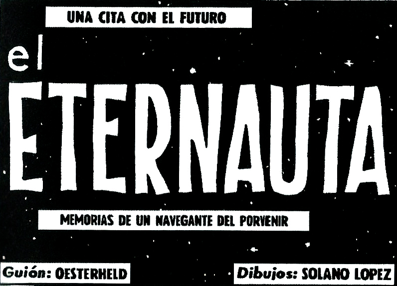

Feria de Ciencias • Godot 4Eternauta: Dark Winter
2026Arcade shooter en 2D de vista lateral ambientado en la clásica nevada mortal de El Eternauta de Oesterheld, diseñado y programado para jugarse en vivo durante la feria de ciencias del colegio.
Queríamos escapar de la típica cartulina escolar y hacer que la gente experimentara la tensión de la historieta jugando en el stand a través de 4 niveles con jefes y enemigos.
Me encargué de la arquitectura en Godot con GDScript: la máquina de estados del personaje (movimiento, salto, disparo), el desgaste del traje aislante por exposición a la nieve y la IA de los invasores.
Coordinar el avance con mis compañeros con una fecha de entrega límite estricta, desacoplar nodos para no pisarnos el trabajo y balancear la dificultad para que cualquier visitante pudiera jugarlo.